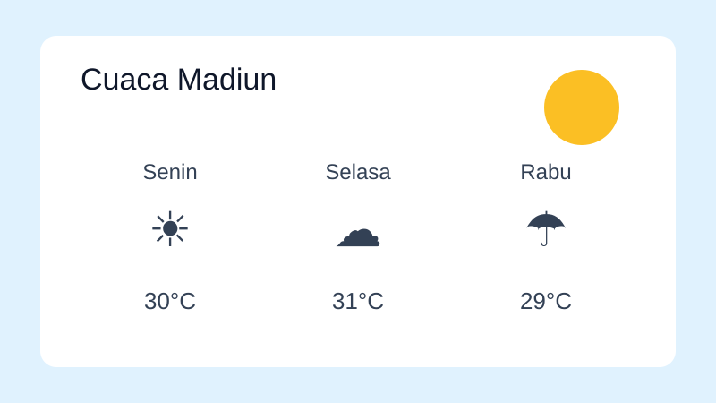

Aplikasi Cuaca Sederhana
Proyek mandiri,

Latar Belakang
Proyek ini dibuat untuk berlatih menyusun data tabular dan struktur halaman yang semantik.
Fitur
- Prakiraan tiga hari
- Tabel suhu dan kelembapan
- Navigasi antar bagian
Data Contoh
| Hari | Suhu (°C) | Kelembapan (%) |
|---|---|---|
| Senin | 30 | 70 |
| Selasa | 31 | 68 |
| Rabu | 29 | 75 |
Yang Saya Pelajari
Penggunaan <table> yang benar dan pentingnya scope pada header.
Struktur yang jelas membuat CSS dan JavaScript lebih mudah ditambahkan.